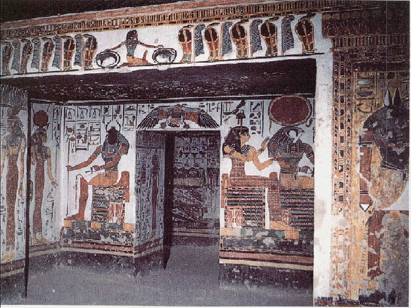

- Towards the middle is Amon. It is apparent he has reached the level of transformation. I believe the images of the animal heads represent this very transformation.
Note the ball of energy above his head (eighth chakra) with the serpent (symbolic of kundalini) protruding from the front.
- A Goddess (I believe is his wife) sits behind him, palms facing him with her hand chakras directing energy into the rear of his 6th chakra.
- She is demonstrating a lower level of achieving the goal of spiritual transformation. A depiction of a bird perched sits above her head, indicating she has not yet reached the levity stage.
- Amon is holding the ankh, indicating he is circulating the energy she is giving him.
- Note on the overhanging wall above, the serpents along with the feathers. The Goddess in the middle, Nephthys? holds two circles which I believe contain the serpentine energy.
NEXT PAGE